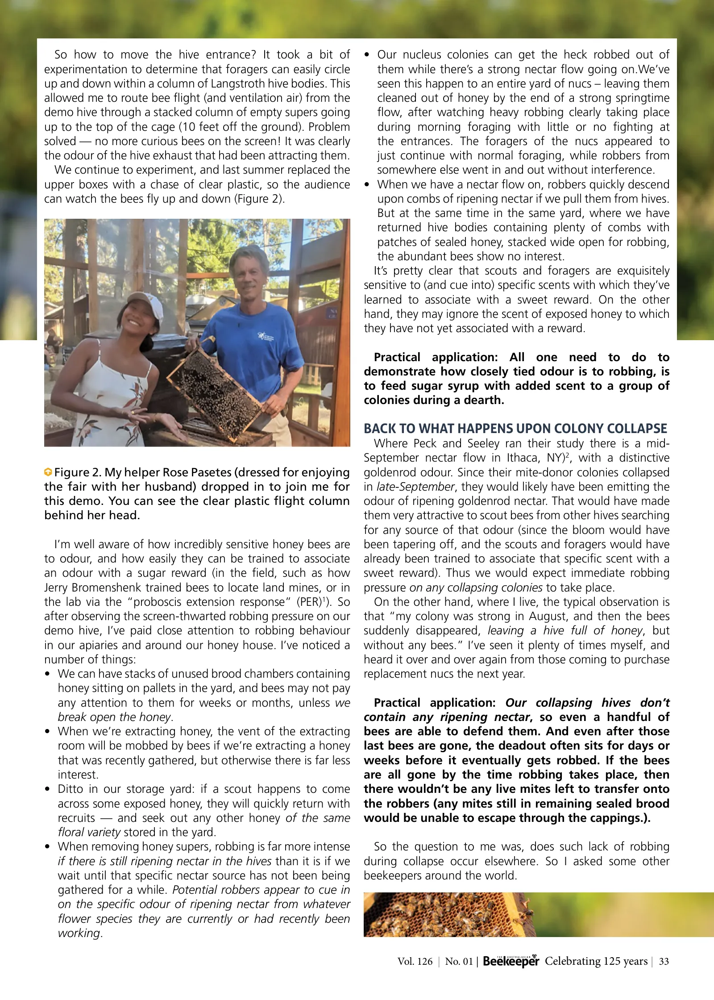

So how to move the hive entrance? It took a bit of
experimentation to determine that foragers can easily circle
up and down within a column of Langstroth hive bodies. This
allowed me to route bee flight (and ventilation air) from the
demo hive through a stacked column of empty supers going
up to the top of the cage (10 feet off the ground). Problem
solved — no more curious bees on the screen! It was clearly
the odour of the hive exhaust that had been attracting them.
We continue to experiment, and last summer replaced the
upper boxes with a chase of clear plastic, so the audience
can watch the bees fly up and down (Figure 2).
Figure 2. My helper Rose Pasetes (dressed for enjoying
the fair with her husband) dropped in to join me for
this demo. You can see the clear plastic flight column
behind her head.
I’m well aware of how incredibly sensitive honey bees are
to odour, and how easily they can be trained to associate
an odour with a sugar reward (in the field, such as how
Jerry Bromenshenk trained bees to locate land mines, or in
the lab via the “proboscis extension response” (PER)1). So
after observing the screen-thwarted robbing pressure on our
demo hive, I’ve paid close attention to robbing behaviour
in our apiaries and around our honey house. I’ve noticed a
number of things:
• We can have stacks of unused brood chambers containing
honey sitting on pallets in the yard, and bees may not pay
any attention to them for weeks or months, unless we
break open the honey.
• When we’re extracting honey, the vent of the extracting
room will be mobbed by bees if we’re extracting a honey
that was recently gathered, but otherwise there is far less
interest.
• Ditto in our storage yard: if a scout happens to come
across some exposed honey, they will quickly return with
recruits — and seek out any other honey of the same
floral variety stored in the yard.
• When removing honey supers, robbing is far more intense
if there is still ripening nectar in the hives than it is if we
wait until that specific nectar source has not been being
gathered for a while. Potential robbers appear to cue in
on the specific odour of ripening nectar from whatever
flower species they are currently or had recently been
working.
• Our nucleus colonies can get the heck robbed out of
them while there’s a strong nectar flow going on.We’ve
seen this happen to an entire yard of nucs – leaving them
cleaned out of honey by the end of a strong springtime
flow, after watching heavy robbing clearly taking place
during morning foraging with little or no fighting at
the entrances. The foragers of the nucs appeared to
just continue with normal foraging, while robbers from
somewhere else went in and out without interference.
• When we have a nectar flow on, robbers quickly descend
upon combs of ripening nectar if we pull them from hives.
But at the same time in the same yard, where we have
returned hive bodies containing plenty of combs with
patches of sealed honey, stacked wide open for robbing,
the abundant bees show no interest.
It’s pretty clear that scouts and foragers are exquisitely
sensitive to (and cue into) specific scents with which they’ve
learned to associate with a sweet reward. On the other
hand, they may ignore the scent of exposed honey to which
they have not yet associated with a reward.
Practical application: All one need to do to
demonstrate how closely tied odour is to robbing, is
to feed sugar syrup with added scent to a group of
colonies during a dearth.
BACK TO WHAT HAPPENS UPON COLONY COLLAPSE
Where Peck and Seeley ran their study there is a mid-
September nectar flow in Ithaca, NY)2, with a distinctive
goldenrod odour. Since their mite-donor colonies collapsed
in late-September, they would likely have been emitting the
odour of ripening goldenrod nectar. That would have made
them very attractive to scout bees from other hives searching
for any source of that odour (since the bloom would have
been tapering off, and the scouts and foragers would have
already been trained to associate that specific scent with a
sweet reward). Thus we would expect immediate robbing
pressure on any collapsing colonies to take place.
On the other hand, where I live, the typical observation is
that “my colony was strong in August, and then the bees
suddenly disappeared, leaving a hive full of honey, but
without any bees.” I’ve seen it plenty of times myself, and
heard it over and over again from those coming to purchase
replacement nucs the next year.
Practical application: Our collapsing hives don’t
contain any ripening nectar, so even a handful of
bees are able to defend them. And even after those
last bees are gone, the deadout often sits for days or
weeks before it eventually gets robbed. If the bees
are all gone by the time robbing takes place, then
there wouldn’t be any live mites left to transfer onto
the robbers (any mites still in remaining sealed brood
would be unable to escape through the cappings.).
So the question to me was, does such lack of robbing
during collapse occur elsewhere. So I asked some other
beekeepers around the world.
Vol. 126 | No. 01 |
Celebrating 125 years | 33